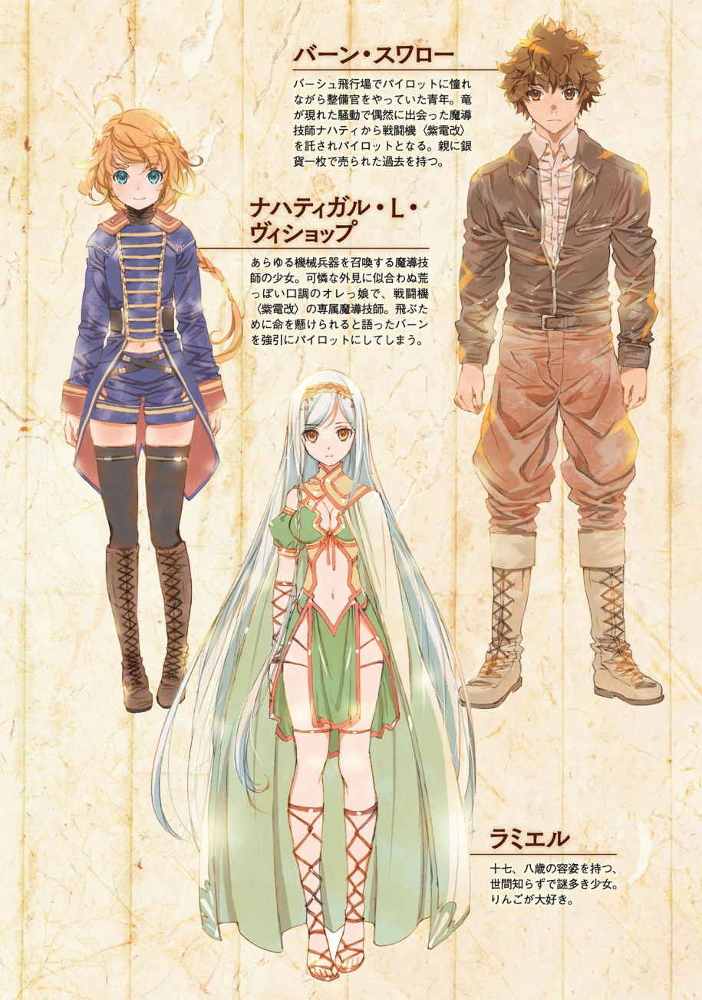

| 竜と魔法の空戦記 ～はぐれ魔導技師と穴あき紫電改～【無料Prelude版】 (GCノベルズ) | |
| 手島史詞 | |
| 株式会社マイクロマガジン社 (2017) | |

※本作品の全部あるいは一部を無断で複製・転載・配信・送信・放送したり、ホームページ上に転載することを禁止します。
本作品の内容を無断で改変、改ざん等を行うことも禁止します。
また、有償・無償にかかわらず本作品を第三者に譲渡することはできません。
※本作品を示すサムネイル等のイメージ画像は、再ダウンロード時に予告なく変更される場合があります。
※本作品は縦書きでレイアウトされています。
また、ご覧になるリーディングシステムにより、表示される文面・画面に差異が生じる場合があります。
※本作品を電子書籍版に収録するにあたり、一部、漢字が簡略体で表記されている場合があります。

あるところに全てを手にした男がいた。
その男の国は繁栄を極め、男もまた名君として名声をほしいままにしていた。
しかし男は満たされなかった。数 多 の黄金も、美しい女たちも、甘露たる美酒でさえ男の渇きを潤すことはできなかった。
やがて男は一頭の傷ついた竜と出会う。輝ける鱗を持った荘厳な竜だ。男はひと目で魅了された。手厚く手当てをほどこし、国中の酒と黄金を以 て竜をもてなした。
竜の語る世界は未知に満たされていた。雲の中の風のにおいと纏 わり付く露の感触。虹の壁が広がる北の空。乾き滅びて砂だけになった南の大地。見知らぬたくさんの景色だ。
男は己の渇きがみるみる癒やされていくのを感じた。
しかしときが経つと竜は去ってしまう。遣いにと、ひとりの娘を残して。娘は竜と同じ物語を語ったが、男は竜の姿が忘れられなかった。
男は消えた竜の姿を追って、娘とともに幾月も幾年もさまよい続けることになる。
竜が語った景色に竜の足跡を探し、国も名誉も富も全てをかなぐり捨てて。
やがて人々が男の名前を忘れるころ、男も人であることを忘れてしまった。
人であることをやめた男は、竜になっていた。
それに付き従う娘もまた竜へと姿を変える。
輝ける鱗を持ち、男が恋い焦がれた竜であった。なんのことはない。竜は常に男とともにいてくれたのだ。
二頭になった竜は、見果てぬ空の彼方へと消えていった。
男は帰ってはこなかったが、渇きに苦しむことはもうなかった。
『ヴァール王朝の古い民話──竜になった男──より』
「──悪いが、他を当たってくれ。俺も〝穴あき〟で飛ぶほど命知らずじゃない」
フライトジャケットに身を包んだ男は、そう言って背中を向けた。
少女はその背中に手を伸ばすが、呼び止める言葉は口にできなかった。
ため息を漏らして、少女は自分の隣に佇 む機体を見上げる。
濃緑の飛行機械。長い胴の左右には薄く鋭い翼。雄々しく大きな口径の機関砲が四本も突き出し、機首には大きなプロペラを持ったレシプロ機だ。
ただ、そのコックピットには無惨な弾痕が穿 たれていた。
濃緑の翼にそっと触れて、少女はため息を漏らす。
「──また、駄目だったのかい？」
後ろから声をかけてきたのは、樽のようなエール腹が目立つ整備官の男だ。答える気にもなれなくて黙っていると、整備官は慰めるように言う。
「嬢ちゃん、傷モノとはいえ、こんな機体を召喚できるんだ。アンタほどの魔導技師 なら他の機体を呼び出すことだって造作もねえんだろう？ なんでそうしないんだ？」
整備官の言う通りだった。
この濃緑の単葉 機は優れた機体ではあるが、唯一無二の存在ではない。他にも同等の性能を持つライバル機はいくつもある。
──それでも......。
少女は知ってしまったのだ。
この機体がどんな空を飛び、どんな最期を遂げたのか。
──私が手繰 り寄せたのだから、飛ばせてあげたい......。
だが、こんな弾痕の刻まれた機体に乗りたがるパイロットはいなかった。
濃緑の外板に体を預け、空を見上げる。
吸い込まれそうな紺碧 。
割れて落ちてきそうな硝子 色の空。
そんな空を見ていると、なぜか涙が込み上げてきた。
「......飛んでくる」
涙を誤魔化すように少女は言う。整備官の男が戸惑うような声を漏らす。
「飛ぶって、大丈夫か？ 嬢ちゃんの体じゃ......」
整備官の言葉を無視して、少女は猫のように軽やかな身のこなしで翼に登り、コックピットへと身を収める。
シートが軋 み、油 と汗のにおいが鼻にかかる。
決して不快なにおいではない。
コックピットは戦闘機乗りの聖域だ。このにおいはここで誰かが飛び、生きた証 だと思う。
──願わくば、この空間を共有できる誰かに巡り合えることを。
整備官の男が言う通り、少女の体ではこの機体を十全に飛ばせることはできない。
それを認めたくないように、少女は外の整備官に目を向けぬまま言う。
「嬢ちゃんと、呼ばないでください」
不機嫌そうにそう告げて、少女は風防 を閉じる。
言っても無駄かと、整備官の男も機体から離れていく。
──独りでは、飛べない。
そう知りつつも、少女は哀れな戦闘機に跨 り、空へと繰り出す。
まるで誰かが自分を見つけてくれる、目印を記すように......。
◇
バーシュ飛行場。
一〇〇〇メーテルを超える滑走路が六本、六隻もの飛行船が離着陸可能な着陸場、さらに三十機以上ものレシプロ機を収容可能という、ヴァール公国屈指の飛行場である。
飛行場というものはただ広い土地をそう呼ぶわけではない。滑走路をコンクリートで舗装し、それが破損しないよう管理、維持できて初めてそう呼ばれるのだ。それだけの技術が必要とされる環境でこの規模は、いまの時代では世界最大級だった。
ちょうど、いまも滑走路から一機のレシプロ機が飛び立とうとしていた。
機首にある四枚羽のプロペラが勢いよく回り、黄色い輪が浮かんでいるように見える。プロペラの先端には黄色のラインが描かれていて、回転するとそう見えるのだ。
ゆっくりと離陸を始めるのは仄暗 い緑色の塗装を施された機体で、両翼には太陽のような赤い円が描かれていた。
作業の横目にそれを視界に捉 え、バーンは口笛を吹く。
「今日はついてる。戦闘機の離陸が見られるとはね」
今年で二十歳になる青年だが、その顔立ちはどこか少年のように幼くも見える。背が高くヒョロリとしているように見えるが、面倒な力仕事は基本的に彼に押し付けられるため体つきは異様にしっかりしていた。
空を見上げる。
吸い込まれそうな紺碧。
全てを包み込むような、文句のつけようのない蒼 穹 だ。
飛ぶにはいい日だろう。
「赤丸型か。あのすらっとした輪郭で四枚羽、機銃......じゃなくて、機関砲が四門ってことは〈紫 電 改 〉......といったかな？」
バーンがここに流れ着いて、けっこうな年月になる。いまでは機体の見分けもつくようになっていて、こっそりと物知り顔で独り言を呟 く。
赤丸型というのは、翼に記された大きな赤い円を示した名称だ。
あの翼の印がなんの意味を持つのか定かではないが、魔導技師 が紡 いだ機体には必ず紋章のような印が刻まれているのだ。その印はいくつかの系統にわけることができて、赤丸型は黒十字型や射的型と並び称される四大名機のひとつである。
いま離陸しようとしているのは単葉機で、機関砲は口径二〇ミリメーテルもある機銃よりも大きな砲だ。それが四門も積んである。尾翼に刻まれた小鳥のシルエットがトレードマークのようだ。
このバーシュ飛行場でも滅多に見かけない機体だ。
速度を上げていく〈紫電改〉を目で追いながら、バーンは腹の前で手を握る。
コックピットに腰掛ければ、そこに操縦桿 があるのだ。
左手は腰の横に置く。スロットルレバーをグイッと前に押し出し、プロペラの回転を上げていく。
風防 の向こうには回転するプロペラが薄い膜を作っているように見えるだろう。遠目には小さく見えるあのブレードは、なんと直径で三メーテル以上もあるのだ。
やがて機体がスピードに乗ってくると、スロットルレバーから手を離して両手で操縦桿を握る。重たい手応えに歯を食いしばって引くと、がたつく機体が不意に静かになった。
思わず顔に笑みが浮かぶ。
離陸成功だ。
そして空に解き放たれた彼らは、遊覧を楽しむわけではない。
マキナレースに挑むのだ。
ひとレースに最低八機、多ければ何十機と集まり、速さと飛行技術の粋を尽くして空の覇を競う。まさに戦闘機のための花道だ。
いまの戦闘機はどう戦うのだろう。空想を膨らませようとしたところで──
「妄想にトリップしてんじゃねえ！ 仕事しろバーン」
突然後頭部を叩かれた。
「......へーい」
ささやかな娯楽のひと時は、無情にもエール腹の中年整備官によって踏み躙 られた。
上司のダートリーだ。主な職務はバーンをどやしつけることと、ケツ を蹴り上げることだ。それでもたまにエールをおごってくれるので、憎めない男ではある。
呆れ顔で、ダートリーは頭 を振る。
「バーンよ......。お前、今年でいくつになる？」
「たぶん、二十歳 っすね」
「二十歳 ったら、もう大人だろう？ いい加減、戦闘機が離陸するたびにそれ をやるのはやめねえか」
「うっす。気をつけます」
「......お前、反省してねえだろ」
ダートリーの小言に、バーンはそそくさと荷車を押して逃げ出す。無骨な荷車に載せられているのは、飛行船用の水素ボンベだ。
この時代、最先端の航空機械と言えば飛行船だった。
銃弾のような細長い形の風船に水素を詰め込んだ乗り物だ。最大六〇トンもの貨物を積載し、航続距離一〇〇〇〇キロメーテルに及ぶ超弩級飛行船まで存在するという。
バーンはそんな飛行船の燃料を飛行場のあちこちへ運搬する雑用係だった。
バーシュ飛行場は全長三〇〇〇メーテル以上もあるのだ。飛行船もそこへ行儀よく整列してくれているわけではない。燃料の補給ひとつとっても、あちこち駆け回らなければならず、さらに整備も完遂しろといわれれば大半の整備官は過労で死ぬだろう。
だからバーンのような下働きのさらに下の雑用係が必要になる。
それでも、バーンは特に不満は抱いていなかった。
──ここなら、いつでも戦闘機を見ていられる。
五歳で根無し草となったバーンが惹 かれたのは、空を自由に行き交う戦闘機の姿だった。
十五年前──それは飛行船がようやくその姿を現し始め、鳥のような翼を持ったレシプロ機はまだ初めての有人飛行が成功したかどうかの時代だ。
そんな空を、すでに戦闘機たちは時速三〇〇キロメーテルを超えるスピードで駆け抜けていた。
本来の人類の技術では生み出せるはずのないもの──まさに魔法のたまものだ。
ここで言う魔法というのは、比喩ではない。
しがない雑用係であるバーンにもわかる。いま離陸していった機体も含めて、戦闘機という存在は明らかなオーバーテクノロジーなのだ。
なのに、矛盾するようだがここでは見慣れた存在でもある。
これはその〝魔法〟によって生み出された兵器だからだ。
そんな文字通りの雲の上の存在を間近で見ることができるのがこの飛行場で、しかも稀 にパイロットや整備官から飛び方やコックピットの内側のできごとを聞かせてもらえる。
いまでは離陸する戦闘機にコックピットの正確な光景を重ねられるほどになっていた。
だからバーンは馬車馬のように使われることにも不満はない。
ただ、少しだけこうも思う。
「──いつか、俺もあの場所に飛んでいけるんだろうか」
見ていることしかできないから、眺められることに満足しようと努力する。
だが、すでにバーンは恋い焦がれてしまったのだ。自分の手で戦闘機を操り、あの広大な空の中へ入っていきたい。
そんな狂おしい渇望を紛らわせられるのは、コックピットの空想を重ねることだけだった。
「......ま、ダートリーにケツを蹴り上げられる前に、仕事するか」
空に消えていった戦闘機を想いながらも、目の前には仕事が山積みだ。バーンは重たい荷車を押して、飛行船と倉庫の間を駆け回るのだった。
そうして、正午のサイレンが鳴ったころのことだった。
「──が出たぞ。滑走路から離れろ！」
バーンはちょうど三本目の水素ボンベを定位置に運び終わり、腰の痛みに伸びをしていた。飛行場に響いた声に、首を傾 げる。
「なにが出たって......？」
聞き慣れない名前で、なんと言っていたのかわからなかった。
周囲を見渡すと整備官たちが泡を喰って逃げ惑っている。ただ事ではなさそうだが、バーンの疑問に答えてくれる者はいない。
そうしていると、空からプロペラとエンジンの音が近づいてくる。
空を見上げると、一機の戦闘機が飛行してきていた。まだ豆粒のような大きさにしか見えないが、一分もしないうちに滑走路へ降りてくるだろう。
癖のあるエンジンの音から、その機体の正体がわかった。
「あれは......さっきの〈紫電改〉か？」
先ほど綺麗な離陸を決めた機体だが、いまはその飛び方が少しおかしかった。
方向転換が上手くいかないのか、機首を滑走路に向けようとはしているのだがフラフラと機体が右へ左へと傾く。
──あの飛び方、方向舵 でもやられたのか？
戦闘機は垂直尾翼にある可動板で機体の向きを制御しているのだが、それが正しく機能していないように見えた。
マキナレースでは機銃による妨害も認められている。ときには撃墜されて死者が出ることもあるという。レースで被弾して帰ってくることはままあることだった。
こういう場合、滑走路側で誰かが誘導してやる必要があるのだが、いまはこの騒ぎだ。誰も降りてくる機体の誘導をする者はいなかった。
戦闘機の飛び方と周囲で逃げ惑う整備官たち。そのふたつから──
──墜落──
そんな単語が脳裏に浮かんだ。
「おいおい、逃げろってそういうことかよ！」
反射的に、バーンは水素のタンクを放り出して駆け出していた。
降りてくる戦闘機を見る。バーンが状況を理解するまでにだいぶ滑走路へ近づいていた。両翼の下から車輪が出ていて、まだ着陸はできるのだとわかる。
高速で降りてくる戦闘機に対し、地上側に受け止めてやる手段はない。
──でも、備えることはできる。
荷車を放り出してバーンが向かった先には、赤く塗られたディーゼル自動車 があった。水を溜めたタンクとポンプを積んだ、消火用の車両だ。着陸に失敗しても、その衝撃で死んでいなければこれを使って助けることができる。
エンジンをかけると、バーンはサイレンを鳴らしながら戦闘機用の滑走路へと、オートモービルを走らせる。
舵 が利かなくとも距離はある。〈紫電改〉のパイロットも滑走路を目指しているはずだ。
後ろを振り返ると、フラフラの〈紫電改〉が滑走路へ車輪をつけようとするところだった。
けたたましい摩擦の音が響き、戦闘機は減速していくが、もともとの速度が違う。
バーンのオートモービルはあっという間に追い抜かれ、その一〇〇メーテル以上先でようやく赤丸型の戦闘機は停止した。
──あんな状態でよくも着陸したな。
素人目にもパイロットの腕がいいのだとわかった。
一歩遅れて追いついたバーンは、オートモービルを戦闘機の隣につけて車両を降りる。
そして、バーンはそれに気づいた。
コックピットを守る風防 に、いくつもの銃創が刻まれているのだ。どういう角度から撃たれたのかはわからないが、中の人間が無傷だとは考え難 かった。
血の跡までは見えないが、これにはバーンも青ざめる。
「おい、中のやつ、無事か？」
声をかけながら、戦闘機に駆け寄る。辺りの人間はこちらに目もくれず逃げてしまい、すでに滑走路からは人気がなくなっていた。
中のパイロットを助け出そうと、主翼に足をかけようとしたときだった。
「──おい！ そこに足を載せるんじゃねえ！」
勢いよく風防 が開かれ、怒声が響く。
慌てて足元を見ると、そこはフラップという揚力を制御するための可動板があるところだった。精密な部品で、ここに体重をかけてはいけないということは飛行場に勤める人間なら誰でもどやしつけられて いることだ。焦っていたとはいえ、これはバーンが軽率だった。
ただ、その声は妙に幼く聞こえた。
「え、子供......か？」
ゴーグルをつけているので顔はわからないが、コックピットから身を乗り出しているのは子供のようだった。
このとき、バーンはわかっていなかった。整備官たちが大騒ぎしているのは、墜落しそうな戦闘機が近づいているからではなかったのだ。
パイロットはハッとしたように空を見上げる。
まだなにかあるのか、バーンが視線の先を追おうとすると、パイロットが甲高い声で怒鳴り散らす。
「バカヤロウ！ なにぼさっと突っ立ってんだ伏せろ！」
「はあ？」
「──ッ、いいから伏せろ」
焦 れたパイロットは、そのまま突き倒すつもりなのかコックピットから飛び降りてきた。
だが滑走路からコックピットまで、実に四メーテル近くもある。二階の窓から飛び降りるようなものだ。
──落ちたら、危ないよな。
ぼんやりとそう思ったときにはバーンの体は動いていた。
パイロットの渾身の体当たりも虚しく、バーンは微動だにせずそれを抱き止めていた。
「............」
高い高いでもするように両脇から抱え上げるような形になってしまい、プランと宙ぶらりんになったパイロットの足が揺れる。
「受け止めてどうすんだ！」
金切り声を上げて、パイロットはじたばたと暴れる。
「お、おい、怪我してるんじゃないのか？」
「んなこと言ってる場合か！ 上を見ろ上を！」
「上......？」
銀色の風が、吹き抜けた。
バーンは、言葉を失った。
銀色の美しい翼を持った生き物が、そこを横切っていた。
そう、生き物だ。躍動する体表は銀色の羽毛に覆われ、突風を引き起こして羽ばたく翼、そしてギョロリとこちらを見つめる金色の瞳。
航空機の手合いではない。しかし鳥と呼ぶにはあまりに大きい──たったいま着陸した戦闘機が小鳥のように見えるほどに──不思議な生物だった。
心臓が大きく脈打ち、頭の中がいっきに澄み渡るような感覚。
恐怖する以上に、心を奪われる、そんな雄大な姿。
しかし見惚 れていられる時間は一瞬のことだった。
直後、息が詰まるような突風が吹き抜ける。
とっさに、バーンは抱えていたパイロットを腕の中に庇 う。
「──きゃっ」
少女のような悲鳴と共に、バーンは滑走路に投げ出されていた。
ようやく、整備官たちが避難した理由がわかった。
この生物が起こす突風から逃げていたのだ。
顔を上げると飛行場に泊まっていた飛行船が大きく揺らぎ、中には転倒してしまうものまであった。
それから、ふと気づく。
──あれ？ こいつ......。
もみ合ったせいかゴーグルが外れていた。衝撃で目を回したのか、まぶたを閉じた素顔は先ほど乱暴な口調で怒鳴り散らしていたとは思えぬほど可憐だ。
なにより、腕の中に抱えたパイロットの体にはささやかな膨らみがふたつある。
妙に小柄なパイロットは、美しい少女だった。
◇
バーンが困惑していると、少女もすぐに目を覚ました。
いまの空と同じような、紺碧の瞳だった。
しばらく呆然としたようにまばたきをしていたが、やがて自分の状況に気づいたらしく顔を赤くして狼 狽 えた声を上げる。
「い、いい加減、放せよ」
「ああ、すまん」
バーンはパイロットを放して立ち上がると、そっと手を差し出した。
少女もその手を取るとゆっくりと立ち上がる。
「......まあ、礼は言っとく。消防車を持ち出したのはお前だろ？」
言いながら、自分が乗ってきた戦闘機をポンと叩く。
その何気ない横顔は、すれ違えば誰もが振り返ってしまうほど整ったものだった。
なにやら乱暴な口調の少女だが、かと言って敵意を持たれているわけではなさそうだ。正直、容姿に似つかわしくないしゃべり方だとは思うが、こんな油くさい飛行場に礼儀作法を説くような人間がいるはずもない。そこはバーンが気にするようなことでもないだろう。
周囲を見渡すと、避難していた整備官たちが戻ってきて飛行船の立て直しや吹き飛んだ機材の回収を始めている。
「それより、機体は大丈夫か？ 尾翼をやられているような飛び方だったが」
外から見た限りでは目立った損傷はないが、機械は傷がなくとも故障を起こす。
少女は驚いた顔で振り返った。それからバーンの汚れた作業着をじっと眺めて、ぽつりと問いかけてくる。
「お前、整備官か？」
「そんな上等なもんじゃないさ」
「なら、やっぱり パイロットか？」
「コックピットに乗り込んだことくらいなら、あるけどな？」
なぜかそのときに限って、バーンは見栄を張ってしまった。
──ま、乗り込んだことがあるのは嘘じゃねえし......。
もしかするとこの少女に失望されたくなかったのかもしれない。
「ふーん......。パイロットか。愛機はなんだ？」
「いや、いまは飛行場に雇われてる身でだな......」
「......？ なんだそりゃ？」
バーンの方こそ〝なんだそりゃ〟である。いつから飛行場の雑用係はもったいぶるようなご大層な身分になったのか。
少女は興味深そうにバーンの顔を眺めていたが、不意に視線を逸 らす。
「まあ、故障じゃねーから気にするな」
話を終わらせるようにそう言うと、少女は分厚いフライトジャケットの前を開ける。小さく吐息を漏らして後ろ髪を振り払うと、三つ編みに結われた蜂蜜 色の髪が放り出されて大きく揺れた。
見たところ、十二、三歳ほどだろうか？
戦闘機に乗るにはあまりに幼いが、ジャケットの下のシャツからは少女らしい胸の膨らみが見て取れる。フライトで汗をかいたのか、絹のシャツはべっとりと肌に貼り付いていた。
思わず目のやり場に困っていると、自身の戦闘機を見上げてため息を漏らす。
「......ったく、ついてねーぜ。こんな人里で竜なんかに出くわすなんてよ」
本当に、こんな口調でなければ綺麗な娘なのだが......。
「リュウ？ 竜ってなんだ。あんた、いまの生き物のこと知ってるのか？」
しかしバーンは、気がついたときには少女に詰め寄り問いかけていた。
その勢いに圧倒されたのか、少女は目を丸くしてカクカクと頷 く。
「く、詳しくはわからないが、あれは竜って生き物だ。ここ百年くらいでめっきり数が減ったらしいが、大昔から空ってのはあの連中の住 処 だったんだとよ」
「空？ 空に住むって、竜っていうのは地面に降りないものなのか？」
「そんなこと知らねーよ。そもそも、あの生き物がどうやって空を飛んでるかだってわかってないんだ」
「翼があったじゃないか」
「いいや。あんな翼ひとつで竜の巨体は浮かばない。滑空 くらいならできるかもしれねーが、飛行できるはずがないんだよ。なのにあいつらは飛んでる」
少女が乗ってきた戦闘機を始め、飛行船や水上機など、航空機械は近年目覚ましく発展を遂げている。近いうちに、人は魔術の力に頼らずとも空を支配できるようになるだろう。
そんないまでも、竜というあの生き物が何者なのかもわからないというのだ。
「まあ、連中が羽ばたくといまみたいに爆風みたいな風が起こる。そいつの力で飛んでるんじゃねーかってのがもっぱらの噂だな」
「すげえな」
考えるとたまらなくて身震いした。
「あんなふうに空を飛べたら、最高だろうな」
「バカ言え。竜に近づいたらオレたちの戦闘機でもバラバラにされる」
「それでも、だよ。あんたみたいに戦闘機に乗って、竜のいる空を飛べたらゾクゾクすると思わないか？」
少女はキョトンとしてまばたきをした。
「あんなものを見たあとで、本当にそう思うのか？」
「あんなものを見せられて、あんたはなにも思わないのか？」
銀色の翼を持った竜という生き物──その姿を垣 間 見られたのはほんの一瞬のことだったが、いまでもあの光景がまぶたに焼き付いている。
吸い込まれるような蒼 の世界に穿たれた銀色の支配者。
──世界はこんなに広いのに、なんでお前はそんなちっぽけな場所にしがみついてるんだ？──
そんなふうに、問いかけられたような気さえした。
どんな悩みや苦痛も、それこそ自分がはした金で捨てられた過去さえも、いまはちっぽけなものに感じてしまう。
恋い焦がれるとは、こんな感覚なのだろうか。
「あんなやつがいる世界を飛べるなら、命でも人生でもなんでも賭けてやるよ」
この少女だって、あの雄大な翼になにも感じなかったわけではないだろう。竜の姿を思い出したのか、その頬が淡く紅潮した。
そんな顔を見ると、バーンまで顔が赤くなりそうだった。
思えば、彼女は乱暴な口調ではあるが、不思議と嫌な印象は受けない。
いくら少年のような口調で話していても、見た目は愛らしい少女だからだろうか。それに竜とはなにかと聞いたバーンにも親切に答えてくれたこともある。
なにより、背が低い。立っていてもバーンの腹部くらいまでしかないのだ。これで悪態をつかれても微 笑 ましいだけだった。
「......こいつ、だ」
少女が、なにかを見つけたようにそんなことを言った。
「なにか言ったか？」
首を傾げるバーンに答えず、少女は問いかけてくる。
「......おい、お前、名前はなんと言う？」
「バーンだ。バーン・スワロー」
「バーンか。オレはナハティガル・Ｌ・ヴィショップ。ナハティさまと呼ぶことを許してやる」
小さな胸を張り、少女は自慢げに語った。
「はあ......」
「なんだよ。魔導技師 のオレが名乗ってやったんだ。ありがたく思えよな」
「マキナ......？ え、あんた、魔導技師 なのか？」
──魔導技師 ──
その名前はバーンでも知っている。
魔法の杖で雷を落とし、箒 に乗って千里を駆け、古 の竜を呼び出し従える。古い呼び方をするなら魔術師や錬金術師のようなものだ。
現代の彼らが振りかざす杖は鉄の銃。
落とす雷は鉛の弾丸。
魔法の箒 は二輪駆動の単車。
そして、従える竜は鋼の戦闘機。
いまでこそ、それらが遙かに進んだ文明の機械だと解明されつつはあるが、大昔の人間には神の奇跡や悪魔の魔術となにも変わらなかった。
世界の技術は魔導技師 の召喚物を模倣することで急速に発展したが、模倣は所詮模倣だ。
いまの技術では、戦闘機の装甲であるジュラルミンが、アルミとなんの化合物なのかさえ特定できない。仮にできたとしても、アルミニウム自体が金と比 肩 する貴金属なのだ。果たしてどうすれば戦闘機のような大きさの機体を量産できるのか、見当もつかない。
少女──ナハティは、そんな魔導技師 だという。
「おう。これが証拠だ」
ナハティのシャツの襟には、六芒星 の紋章を刻んだピンが止められていた。
魔導技師 の紋章だ。
「なんで魔導技師 が戦闘機に乗ってるんだ？ マキナレースに出るのか？」
魔導技師 は戦闘機を始めとする機械兵器を呼び出せる、人類の至宝だ。当然のように戦死者が出るマキナレースでの魔導技師 はスポンサーのような立ち位置で、パイロットは別に雇うものらしいのだが。
ナハティは露骨に顔を背けた。
「うっ......それは、その、こっちにも事情があるんだよ」
なにやら言い淀 むナハティに首を傾げていると、彼女は威圧的に片目を細めトンと指先で胸をついてくる。
「そんなことより、だ」
「な、なんだよ」
「お前、よくわからねーこと言ってたけど、いまは乗る機体はないのか？」
どうやら紛らわしい言い方をしたせいで、彼女はバーンをパイロットだと思ってしまったようだ。
騙しているような気分で、背中に嫌な汗が出てきた。
「まあ、愛機はないな......」
それどころかパイロットですらない。
いまさらそんなことは言い出せなくて困窮していると、ナハティは試すように言う。
「なにがあったのかは知らねーが、お前は空を飛べるなら命を賭けると言ったな？ それをオレに誓えるか？」
いままでとは打って変わり、真面目な声音だった。自分がただの雑用係だと打ち明けるのなら、いましかないと思った。
バーンは降参するように両手を上げた。
「悪かった。許してくれ。本当は、俺は──」
「──飛ぶために死ねるかと聞いてるんだ」
強い口調だった。
誤解を解かぬまま答えてはいけない。
頭ではそれがわかっていたが、同時に──これはチャンスだ──彼女がなにを言おうとしているのかはまだわからないが、この先、バーンがどれだけ恋い焦がれても訪れない、唯一無二の機会なのだという予感があった。
ナハティを騙すことになるのかもしれない。
それでも、人は待っているだけではなにも摑めない。なにもなしえない。
あとで恨まれるとしても、出会って間もない少女を傷つけるかもしれないとしても、バーンにはここで足踏みをするようなことは選べなかった。
小さく息を整えて、心の中に一枚の銀貨を思い浮かべる。
これはバーンが選択を迫られたときに行う儀式のようなものだ。
バーンには親がいない。自分を産んだ人間なら確かに存在するし、恐らくまだ元気で生きているのだろう。だが彼らにとってバーンは〝我が子〟ではなかった。
望まれずに生まれたバーンは、銀貨一枚で人買いに売り払われた。五歳のころの話だ。
銀貨一枚といえば、酒場で呑むエール一杯がちょうど同じ値段だ。
だから人生の選択を迫られたとき、バーンは決まって一枚の銀貨をイメージする。銀貨はバーンそのもの。表と裏のどちらが出るかは、自分にもわからない。
この銀貨を弾くことによって、バーンは自分の命というチップをベット するのだ。
心の中の銀貨を弾いて、バーンは頷く。
「どの道、生きていても死んでいるようなもんだ。一度でもあの空を自由に飛べるのなら、俺はなんでもするだろう。銀貨一枚の命を賭けるなんてたやすいさ」
それはこの選択に対する覚悟でもあった。
──次の瞬間、嘘がバレてあの機関砲で撃ち殺されても、俺は後悔はしない。
人を騙すというのは、そういうことだとバーンは思う。まして、相手は魔導技師 なのだ。不敬罪でこのまま処刑されても文句は言えない。
ナハティはにわかに眉をひそめる。
「銀貨一枚って、どういう意味だ？」
「昔、そんな金額で俺は売り飛ばされたんだ。だから俺の命の価値は銀貨一枚なんだと」
「......なら、決まりだ」
少女はニッと笑みを浮かべた。
「銀貨一枚だというお前の命、オレが買い取ってやる！」
「へ......？」
ナハティは背後の戦闘機を示す。
「お前にこの〈紫電改〉をくれてやる」
ざわっと、肌が粟 立 つのがわかった。
「オレがお前に自由と空を与えてやる。だからお前はオレのために飛べ。マキナレースを勝ち抜くんだよ」
「飛べって......そんな簡単に、決めていいものなのか？」
「こいつはオレが呼び出したオレの分身だ。どう扱うかはオレが決める。誰にも文句は言わせねー」
信じられないように、バーンは問いかける。
「つまり、乗せてくれるのか？ その、あんたの戦闘機──〈紫電改〉に」
少女は、花が開くような笑みを浮かべて、確かに頷いた。
それから、問答無用で手を握ってくる。
「さて、お前の飼い主はどこだ？ 話をつけてやる」
ナハティはその綺麗な手袋が汚れるのも気にせず手を引いた。
折れそうなほど細くて、小さくて、それでいて温かい手だった。
──誰かの手に触れたのなんて、どれくらいぶりだろう......。
それも、こんなまばゆい笑みを浮かべる少女に握られたのは間違いなく初めてだ。さらには、戦闘機に乗せてくれるという。
もはや現実味を欠いた光景ですらあって、夢でも見ているような気分だった。
それでもナハティの行動力と言葉は、紛れもなく現実のものだった。
半刻もしないうちに、バーンはナハティの所有物になっていた。
◇
バーンのお買い上げ は、つつがなく完了した。
飛行場にしてみれば一番下の下っ端 がどこに消えようが知ったことではない。代わりはいくらでもいる。それを金を払ってまで引き取りたいという人間がいるのだから、大喜びで手放してくれた。
その間、バーンは自分の正体がバレやしないかと気が気ではなかったが。
意外だったのは、それを聞いたダートリー──バーンの直属の上司は彼で、シフトに穴が空くことを伝えなければならなかった──が、別れを惜しんでくれたことだ。
──まさか、お前がパイロットに引き抜かれるとはな......。がんばれよ──
そんなふうに励ましてさえもらえたのだ。
このときばかりはバーンも普段の不真面目を後悔した。
どうにも、ナハティとも面識があるようなのが気になったが......。
「──まあ、あれだな──もぐもぐ──この飯は、味はいまいちだが──んぐんぐ──腹一杯食えるのがいいところだ──ゴクン──おい、このウインナーもうひと皿持ってこい！」
そんなふうに、怒 濤 の勢いでバーンの身柄を買い取ったナハティは、同じく怒濤の勢いで今度は食堂の食べ物を胃袋に放り込んでいた。
バーシュ飛行場の食堂には、空になった皿が山のように積まれている。いまのお代わりで確か十皿になる。
百数十人の従業員を擁するこの飛行場だが、その全員が一度に食堂へ押しかけることはない。席の数は七十かそこらでそれほど大きな食堂ではなく、昼時をだいぶ回っているせいか客の姿も少ない。
その少ない客たちが、唖然としてナハティのテーブルを眺めていた。
──この小さい体のどこにこんな量が入るんだ......？
バーンが絶句していると、ナハティはその視線をどう受け取ったのか、鼻先にフォークを突きつけて軽快に笑う。
「なんだ、お前も好きなもん食えよ。景気づけだパーッと食え、パーッとな」
「あ、ああ......。いただくよ」
すでに見ているだけで満腹になりそうだが......。
いつの間にか、ナハティはフライトジャケットから着替えていた。
魔導技師 の礼服だろうか？ 胸と襟に魔法陣を模 った勲章がついていて、首にはパリッとしたタイが締められている。戦闘機を操縦していたからか、スカートではなくズボンを穿 いていて男装のように見えた。
......もっとも、ブーツに包まれたつま先は床まで届かないらしく、宙でプラプラと揺れている。なんだか背伸びをしている子供を見ているような気分だった。
やがて運ばれて来た次の皿を平らげたところで、ようやくナハティの食欲は収まった。
「ふう、食った食った」
「本当に、よく食べるな」
呆れたようにバーンが言うと、ナハティの頬がにわかに赤く染まる。一応、恥じらいのような概念は持っていたらしい。
「し、仕方ねーだろ？ 魔導技師 は戦闘機を動かしたら腹が減るもんなんだよ」
慌てて顔を背けると、ハンカチで口元を拭 う。
──こういう顔をしてれば可愛い女の子なんだがな......。
せっかくの愛らしい容姿を台無しにするような、がさつな口調だ。なんというか、野良猫に懐かれたらこんな感覚なのではないかと思う。
とはいえ、ここで彼女の機嫌を損ねるのは困る。
「そうか。魔導技師 は飛行中も〈マキナ・トレース〉を酷使してくれているんだよな」
──確か、以前パイロットたちがそんなことを話してたはずだ。
うろ覚えの知識で理解を示す態度を取ると、ナハティも気をよくしたように頷く。
「わかってんじゃねーか。ま、いまさら言うまでもねーことだが、お前が被弾してもお前が死んでなけりゃオレがレストアしてやる」
「飛行中も、なんだよな？」
「飛行中にできなきゃ魔導技師 がナビにつく意味がねーだろうが」
呆れたようにナハティは笑う。
戦闘機の提供者である彼女たち魔導技師 は、飛行中は航空士 のようなことができるという。パイロットに航路や周囲の戦況を伝えてくれるのだ。そして普通なら爆散するような損傷を負っても、立ちどころに修復できる......らしい。
噂話を聞きかじっただけのバーンには、実際にどんな感覚なのかはわからない。
それから、ナハティはふと思い出したようにバーンの顔を見上げる。
「そういや、お前はどんな機体に乗ってきたんだ？」
「......っ、その質問に、なにか意味はあるのかい？」
ギクリと身を強 張 らせ、バーンは平静を装って誤魔化す。
ナハティは特に疑問を抱いた様子もなく、鼻を鳴らす。
「はっ、らしい こと言うじゃねーか。確かにあいつを乗りこなしてくれるんなら文句はねーが、オレはお前が何者かまったく知らねーんだぜ？ 少しは行儀よく答えてもバチは当たらねーよ」
まったくもって正論である。
むしろ寛容すぎる態度に申し訳なくて、バーンは嫌な汗が止まらなかった。
バーンは〝あの日〟乗り込んだ機体の姿を思い返す。
「赤丸型だ。確か......〈零式 〉だったな」
〈零戦 〉の愛称の方が有名かもしれない。ナハティの〈紫電改〉と似た姿の機体で、大きな違いはプロペラの枚数と機銃の数だろうか。よく見ると翼の付け根の形も違うのだが。
それでも〝あのころ〟は戦闘機の中でも群を抜いた性能だった。
コックピットに身を埋 めたときの感動は、いまでも克明に思い出せる。
──そのあと、死ぬんじゃねえかってくらいぶん殴られたけどな。
人買いに売られたバーンは、命の危険を感じてすぐに逃げ出した。その後、根なし草として数年さまよった末にこのバーシュ飛行場に流れついた。
空を見上げ、戦闘機に憧 憬 したバーンは半ば自暴自棄になって夜の飛行場に忍び込み、憧れの戦闘機に乗り込んだ。
飛ばすつもりもなければ、できるとも思っていなかった。ただ、一度でいいからここに座ってみたかったのだ。それさえ叶えば、もう死んでもいいとさえ思っていた。
当然のことだが、バーンはすぐに警備員に見つかった。
重要な機体だったこともあるが、魔導技師 の財産に手をつけたのだ。飛行場としても信用問題だろう。バーンは整備官からしこたま殴られた。
だが、すでに死ぬつもりでいたバーンは──思えば、銀貨を弾く儀式もこのときから始めたものだった──自分でも驚く行動に出た。
──お願いだ。ここで、働かせてくれ──
油だらけの床に頭を擦りつけ、歯が折れるほど痛めつけられた体でそう懇願したのだ。
面食らった整備官は、バーンに度胸のようなものを感じたらしい。最終的にはバーンを雇うよう、上に掛け合ってくれた。十歳のガキを散々殴った罪悪感もあったのかもしれない。
ちなみに、その整備官こそ数分前までの上司であるダートリーだった。
「へえ〝ゼロ〟か。いい機体だな。......いまのマキナレースを勝ち抜くにはちと 力不足ではあるが」
感慨深そうに頷いて、ナハティはスプーンを口に運ぶ。
......いつの間にかデザートにアイスクリームを注文していたようだ。
「力不足って、いまでも現役で戦える機体だろう？」
いまでも〈零戦〉を愛機にするパイロットは多い。
バーンにとっても思い出の機体なのだ。ついつい強い口調で問いかけると、ナハティはくるりとスプーンを回して言う。
「射的型の〈スピットファイア〉や黒十字型の〈メッサーシュミット〉あたりが相手だとキツイぞ。星丸型の〈ライトニング〉になるともう旋回性なんて関係なく引き離されるしな」
魔導技師 が呼び出す戦闘機も、性能が向上しているものらしい。
十年前の最新鋭の機体も、いまでは旧型機になりつつあるということだ。
複雑な気持ちで肩を落としていると、ナハティはポケットから鎖のついた懐中時計を取り出す。真 鍮 製で小鳥のマークが刻まれていた。
何気なく、バーンは問いかける。
「それ、〈紫電改〉の尾翼にも同じマークがあったな。なにか由来のあるものなのか？」
「小夜鳴き鳥 だよ。魔導技師 としてのオレの名はナイチンゲールのナハティなんだ」
「綺麗な名前だな」
「ほっとけ！」
途端に、ナハティの顔が赤く染まった。
──こいつ、意外とすぐ赤くなるんだな......。
黙っていれば可愛らしい容姿をしているのに、もったいないと思った。
「ついでにもうひとつ聞いてもいいか？ なんであんたはそんなしゃべり方を？」
「......ふん。オレの〈紫電改〉が舐められないためだよ」
答えの意味はよくわからなかったが、はぐらかされてしまったようだ。どうやら踏み込みすぎた質問だったらしい。ナハティは不機嫌そうに顔を背けてしまう。
バーンは慌てて首を横に振った。
「別に詮索するつもりはないさ。あんたも俺を詮索しないでくれるんだろう？」
「......チッ、お前、けっこう食えねーヤローだな」
騙していることがバレないようにという気持ちから出た言葉だったが、釘を刺したように受け取られてしまった。
──まあ、その方が都合がいいわけでもあるんだが......。
少し話しただけでも、ナハティは裏表がなくて気持ちのいい人物だと思った。そんな少女を騙すような形になってしまったことに罪悪感が込み上げてならない。
気まずさを誤魔化すように視線をさまよわせて、バーンはふと見慣れない人間がうろついていることに気づいた。
真っ黒なスーツに紳士帽子。顔も黒めがねで隠されていて、いかにも異様な雰囲気だ。
どうやら食堂の職員たちになにか聞き込んでいるようだが......。
「貴族の犬どもだな」
「え？」
バーンの心を読んだように、ナハティが言った。
「ヴァール公国の諜報員ってやつだよ。おおかた、竜の行方でも追いかけてきたんだろ？」
「竜って、なんでまた貴族が？」
ナハティは嫌悪感を隠そうともせず、吐き捨てるように言う。
「竜ってのは人の常識では推し量れない魔術的生物だ。オレたち魔導技師 の力も竜から授かったなんて話もあるくらいだ。だから昔から竜の肉を喰えば力を得られるだとか不老不死になれるだとか言われてて、力の正体を探ろうと追いかけるバカは後を絶たないんだよ」
「じ、じゃあ、さっきの竜も危ないのか？」
バーンが狼狽えると、ナハティはカラカラと笑った。
「ほっとけばいーさ。連中に竜を捕まえられるような力はない。それに魔導技師 とのパイプを失ったいまの貴族どもは傲慢なだけの飾りもんさ。オレやお前らパイロットに手を出すこともできねーよ」
「な、なら安心だな」
パイロットのひと言にバーンは声が裏返りそうになったが、精神力を振り絞って取り繕った。
かつての魔導技師 は、貴族に使われる道具でしかなかった。
それが魔導技師 の地位が上がったことで、立場が逆転した。貴族の権威が失墜しつつあるというのは、バーンも聞いたことがある。想像以上に、貴族の衰退は深刻なもののようだ。
黒服たちの存在は気になるが、いまのバーンには関係のないことだった。
ただ、ナハティは最後にひとつだけ警戒するように呟く。
（......ま、だから竜なんか狙ってるんだろうけどな）
なにを言ったのか、バーンには聞き取れなかった。
それから、いまのナハティの言葉を思い返す。
「竜を喰う、か......。あんな綺麗な生き物を殺したがるなんて、貴族のやることは理解できねえな」
吐き捨てるようなバーンの呟きに、ナハティが噴き出す。
「お前、そのうち竜になっちまいそうだな」
「──ッ、竜ってのは人間でもなれるのか？」
「そこに食いつくのかよ......」
呆れたように少女は閉口する。
「よくある昔話だよ。ある愚かな男が傷ついた竜を助けて、竜は人間の女に化けて恩返しに来るんだ。それだけでオチもわかるってもんだろ？」
「ああっと......正体がバレて、竜は帰ってしまうのか？」
竜でなくとも、鳥であったり狼であったり。
バーンの楽しみといえば戦闘機を眺めることか、パイロットの会話を盗み聞きすることくらいだったのだ。ときにはそんな昔話を耳にすることもあった。
「そんなところだ。だがこの話には続きがあって、竜を忘れられなかった男は、竜を追いかけるうちに自分自身も竜になっちまうんだ」
「そりゃあいいな。どうにか方法がわからないもんか」
──あんな偉大な姿を見たら、追いかけずにいられなかったんだろうな。
それは男の動機とは異なる理由かもしれないが、バーンは心から共感した。
「......お前、変なヤローだな」
変人を見るようにナハティが言うが、どこか親しみも篭 もっているように聞こえた。
「ま、お前はオレが雇ったんだ。いまは竜じゃなくて鉄の翼に乗ってもらうぜ」
「し、心配するな！」
雇うのひと言で、バーンは現実に引き戻された。
それからナハティは取り出したままになっていた懐中時計を開く。
「時間まで、もう少しあるな。軽く肩慣らしに行くか？」
「ああ。そうしよう」
なんの〝時間〟なのか、どういう〝肩慣らし〟なのか、疑問だらけだったが口を開けばボロが出てしまいそうで相づちを打つことしかできなかった。
もちろん、すぐにバーンは後悔することになるのだが。
◇
「これがコックピット......」
ところは変わって〈紫電改〉が着陸した滑走路。
シートに体を埋める。
油と、それが焦げるようなにおい、そして汗のにおいが鼻にかかる。
感極まって、迂 闊 に口を開くと変な声が出そうだった。
目の前には速度計、燃料計、高度計などなど十数個に及ぶメーターが嵌 まる計器盤がある。その手前に床から突き出すのが操縦桿だ。基本的に、戦闘機の操縦はこれひとつで行う。
足元には二枚のペダルがあり、これを踏むとラダーと呼ばれる尾翼の可動板が左右に動くようになっている。左手側にはスロットルレバーと風防 のロック解除レバー。スロットルレバーはエンジンの出力を調節する装置で、これを上げることでプロペラの回転が増すのだ。
ナハティが言う〝肩慣らし〟とは、〈紫電改〉の試運転のことだった。
操縦桿を握るのなど初めてだというのに、上手く飛べなければ自分がど素人であることがバレてしまう。もちろん、わからないからといってナハティに聞くわけにもいかない。
それでも、バーンは昂揚 を隠せなかった。
──思い描いてた通りだ。
戦闘機乗りや整備官たちの会話、そして過去に一度だけ乗り込んだときの記憶から何度も空想してきたコックピットの風景。夢の場所だ。この〈紫電改〉のコックピットは、まさにバーンの想像と寸分違 わぬものだった。
何度この操縦桿を握ることを夢見たことか。
操縦桿の尖端 にはスイッチがひとつ嵌まっていた。
──こいつが機関砲の発射装置......だよな？
それに触れようとすると、ヒョイと外からナハティが身を乗り出してくる。
「バーン、お前、〈紫電改〉は初めてだよな？」
「あ、ああ......」
そもそも戦闘機の操縦自体が初めてだ。
「なら教えておいてやる。そいつはフラップ上げスイッチだが、こいつのフラップは自動で動く。操作するなら先に左手のとこにある切り替えレバーを操作しないと使えねーからな」
フラップというのは、主翼後部にある可動板のことだ。これを下に目一杯下ろせば揚力が増して低速でも安定した飛行ができる。着陸には必要な知識だったはずだ。
──左の手元......これか？
確かフラップを下げる装置でもあるはずのレバーだ。
複雑な手順を頭の中でイメージしていたせいか、バーンは次に軽率な言葉を口に出してしまう。
「え、それじゃあ機関砲の発射装置はどれだ？」
「......？ スロットルレバーに引き金 があるだろう？」
左の手元に目を向けると、なるほどスロットルレバーの向こう側に大きな引き金 が突き出していた。これを握り込むことで機関砲を発射する仕組みらしい。シートに座っていると死角になっていて見えなかったのだ。
それを確かめていると、ナハティが怪 訝 そうな声をもらす。
「ゼロも同じ構造のはずだろ？」
ギクリと身を強張らせた。
所詮は空想に描いていた場所だ。バーンが聞いてきた戦闘機の話は〈零式〉や〈紫電改〉のものだけではない。いくつもの話を聞くうちに、混同してしまっていたらしい。
さっそくボロが出てしまった。
ドクドクと心臓が鳴るが、バーンは努めて平然たる表情を取り繕って口を開いた。
「そうか。やっぱり ゼロと同じなんだな。赤丸型は全部そうなのか？」
「だいたいはそうだな。確か〈疾風 〉は操縦桿にトリガーがあるって話だが」
単に確かめただけという顔をしてそう呟くと、ナハティも納得したのかそう答えてくれた。
疑問を抱く隙を与えぬように、バーンは次の質問を投げかける。
「それよりフラップが自動で動くってのは、どういう仕組みなんだい？」
これは他の機体でも聞いたことがない。恐らく〈紫電改〉特有の機能のはずだ。
ナハティもその質問を待っていたというように笑みを浮かべる。
「おう。赤丸型でも実装されてるのはこいつだけだ。パイロットの練度がちょっとやそっと低くとも、こいつがあればいっぱしの操縦ができるってわけだ」
「そいつは心強いな」
心底そう思う。
......まあ、その素晴らしい自動空戦フラップとて、バーンほどずぶのど素人が操縦することは想定していないだろうが。
「他になにかわからねーことはあるか？」
わからないことというより、一から全て教えてもらいたいところだが、これ以上無知なところをさらけ出すわけにはいかない。
──せめて一度でも、空を飛びたいんだ。
強がるように、バーンは首を横に振った。
「コックピットなんて、どの機も似たようなものだろう？ あとは飛んでから覚えるさ」
「違いねーな」
納得したように頷いて、ナハティは顔を引っ込める。
「あ、待ってくれ、ナハティさま」
バーンがその名前を呼ぶと、少女は真っ赤になってまた顔を覗 かせる。
「な、なんだよその呼び方は......」
「いや、あんたがそう呼べって言ったんじゃないか」
「......んなもん、冗談に決まってるだろーが」
気むずかしい娘だ。
バーンは苦笑しながら問いかける。
「気になってたんだが、ナハティはマキナレースに出てたわけじゃないんだよな？ なら、さっきはなんで飛んでたんだ？」
「それは......」
ナハティは怯 むように言い淀むが、今回は観念したように口を開いた。
「この〈紫電改〉を乗りこなせるやつはいなかったんだ。でも、だからっていつまでも倉庫に押し込めておく気にはなれなかった」
「そんなに難しい機体なのか？」
なら、練度が低くとも乗りこなせるという自動空戦フラップはなんだというのか。
しかしナハティはなんでもなさそうに首を横に振る。
「いいや？ 機体の性能は最高だ。それはオレが保証してやる。オレの腕でも問題なく扱えるくらいだからな」
ただ、とナハティは悔しげに胸を押さえる。
「オレの......その、体じゃ、乗りこなしてやれねーんだ」
バーンはハッとした。
──ナハティは、なにか身体的なハンディを負っているのか。
そんな少女を騙すようなことをして、バーンはここに乗り込んだ。
良心の呵 責 に、胸が痛む。
だから、バーンは気づかなかった。
いつの間にか話がすり替わっていたことに。
ナハティは何事もなかったように微笑む。
「ま、レースの前に軽く飛んでこいよ」
「......ああ！」
不安はある。
ナハティを騙していることへの罪悪感もある。
それでも、空想の中でしか触れることのできなかったコックピットに、自分はいま乗り込んでいるのだ。堪 えきれない昂揚に、口元が弛 むのを抑えられなかった。
すぐに、バーンは思い知ることになる。
上手い話には、裏があるのだということを......。
◇
プロペラが回転し、ゆっくりと機体が前進し始める。
「なあ、ナハティ」
『なんだ？』
風防 を閉め、少女に問いかけると意外に鮮明な声が返ってきた。無線のスイッチがどれかはわからないが、ノイズもなく聞こえるものなのだろうか。
それには感心しつつも、バーンは風防 を見上げる。
「この〈紫電改〉のレストアは、ナハティがやってくれるんだよな？」
『もちろんだ。こいつを喚 んだのはオレだからな』
それらの答えを確認して、バーンはもう一度風防 を見上げた。
「この風防 、ヤバイ位置に弾痕があるんだが、直してもらえないか？」
ナハティが着陸したとき、バーンもひと目でパイロットが無事ではないと考えた弾痕だ。
右斜め上にこぶし大の穴が空いていて、座席の横にも被弾の跡が残っている。ちょうど真横から上四十五度を撃ち抜かれたことになるのだろう。
バーンの頭の位置は綺麗に撃ち抜かれていることになる。
縁起が悪いことこの上ないし、そもそもレース中は銃撃も認められているのだ。流れ弾がここから飛び込んでくる可能性もあった。
『............』
なのに、ナハティはなにも答えなかった。
「こいつは、レストアしてくれないのか？」
『......できない』
「え？」
『できねーんだ。〈マキナ・トレース〉は確かに召喚物の修復ができるけど、そいつは元に戻すってだけなんだ。召喚したときについていた傷は、直せない』
バーンはようやく理解した。この赤丸型でも最上機とされる機体を持ちながら、ナハティがパイロットを探していたわけを。
本来なら、引く手数多でなければおかしい。
それがこの不吉な銃創のせいで、みんなパイロットを降りていったのだ。
途端に、戦闘機が物悲しく震えたような気がした。
もちろん、ただの錯覚だとは思う。なにかの拍子にエンジンの回転が鈍ったかなにかだろう。そのはずなのに、なぜかバーンまで悲しくなるような気持ちがしたのだ。
──なんだ？ 戦闘機が、まるで生きてるみたいに......。
バーンは風防 の大穴に触れる。
風が吹き込んでくるのが少し問題かもしれないが、なにかで塞げばこと足りる程度のものだ。一度の飛行で風防 が砕けるほど広がる大きさにも見えない。
それを確かめて、バーンは操縦桿を握り直した。
「ま、別にいいか」
『お、お前、それですませていいのか？』
「なにかマズいか？」
『だって、普通は嫌がるだろう？』
なんとなくだが、先ほどの戦闘機から感じた不安は、もしかしたらナハティのものだったのかもしれないと思った。
だから、慰めるようにバーンは言う。
騙しているのは、自分の方なのだから。
「まあ、気にはなるが、あとでなにかで塞げばいいだろう。それ以外に問題はないのに、ここで降りるなんて手はないよ」
『......ありがとよ』
素直な感謝が返ってきて、バーンは鼻白んだ。
「なんだよ急に」
『なんでもねーよ。それより、そろそろ時間がなくなってきた。さっさと離陸しな』
一体、なんの時間だろうか。
それはもちろん気がかりでならないのだが、バーンはこれから離陸しなければならないのだ。本当に、自分がやっても飛べるのかと問い返す余裕はなかった。
右手を操縦桿に残して、左手をスロットルレバーに添える。
ずっしりと重たい手応えを味わいながら、じわじわと前に押し出す。プロペラの回転がさらに上がり、機体がガタガタと揺れ始めた。
──こ、こんなに揺れるもんなのか。
本当に、大丈夫なのだろうか。
しかし故障や損傷をしているならナハティが修復してくれるはずだ。
速度が上がるにつれて、視界が狭くなっていく。周囲がぼやけて正面しか見えない。祈るような気持ちでそれに耐えていると、やがて速度計が時速一五〇キロメーテルを超えた。
──いまだ！
操縦桿を手前に引き込む。
ガクンと大きく揺れたのを最後に、機体の振動が消えた。
──飛んだ、のか......？
滑走路が遠ざかっていく。
いままで自分がせかせか駆け回っていた飛行場が見る見るちっぽけになっていき、どこまでも広がる蒼が世界の全てになっていく。
完全に陸から離れたことを確かめて、車輪を翼に収納する。
風を遮 るものが減ったことで、濃緑の機体がさらに加速したのがわかった。
風防 の弾痕から冷たい風が吹き込み、コックピットの気温を下げていくが、それさえもいまはより深く空を味わわせてくれるスパイスに感じられた。
背筋がゾクゾクと震える。
「これが、空......」
たまらず、声が漏れる。
『なに初めて飛んだみたいなこと言ってんだ？』
「えっ、あ......その、離陸の瞬間ってのは、いつだって初めてみたいな気分になるもんさ」
『そうか？』
怪訝そうな声を漏らすものの、ナハティは特に追及しなかった。おかしなやつだくらいには思われただろうが、そんなことでバーンが素人だと気づかれないなら安いものだ。
──ということは、離陸に問題はなかったってことだよな？
下手な離陸だったなら、きっといまの独り言でおかしいと気づかれただろう。
ホッと胸をなで下ろしながら、バーンは高度を上げていく。
『おい、そっちじゃねーぞ。二時の方向へ向かうんだ』
「え、ああ......」
クロックポジションと呼ばれる、時計の文字盤に準 えた方位の見方だ。
自分の正面を十二時として、対象がどちらにあるのか把握する。ここに上下の軸が加わるときは上方 や下方 と言い表す。
計器盤のコンパスに目を向ける。
いまは南に向かっていて、ここから南西に向かわなければならないらしい。つまり、右に旋回しなければいけないのだ。
操縦桿をそっと右に倒す。
主翼の補助翼 が作動し、機体がじわじわと右に傾斜するが、旋回は始まらない。操縦桿はあくまで機体を傾ける装置でしかないからだ。
旋回するには、機体を横に向けて上昇 する必要がある。
バーンは操縦桿をまっすぐに戻して今度は手前に引く。
すると確かに旋回が始まるが、今度は高度が落ち始める。
──旋回ってのは操縦桿の倒す、戻す、引く、と旋回と逆方向のペダルを蹴る、を一度にやらないといけねえ──
年配のパイロットが自慢げに教えてくれた言葉を思い返し、バーンは左足を踏み込む。
ふわっと機体が浮かび、下降が収まった。
実際にやってみて、言葉の意味がわかった。
──そうか。機体が横を向いたら、垂直尾翼の方向舵 が昇降舵 の代わりになるんだ。
昇降舵 というのは、主翼の補助翼 とは別で水平尾翼の後部にある可動板のことだ。その名の通り、これが機体の上昇や下降を制御している。これが正しく機能していないと、機体は速力を得ても高度を得られず、最後には墜落してしまうことになる。
水平尾翼が真下を向いていれば垂直尾翼が真横を向くことになる。だからここで方向舵 が機体の上下の向きをコントロールしてやらなければならないのだ。
しかしまだ旋回は終わっていない。
汗を滲 ませながら、コンパスを見る。
すでに機首は南西に向かおうとしていた。
今度は左に操縦桿を倒しながら、右足を踏み込む。そこで操縦桿を素早く元の位置に戻すのも忘れない。
右へ傾いていた機体が地面と水平に戻り、機体は真っ直ぐ南西へ向かい始めた。
ふーっと、長いため息が漏れる。
──旋回ひとつで、こんなに集中力がいるものなのか。
と、そこでナハティが不思議そうな声を漏らす。
『お前、具合でも悪いのか？』
ビクッと、バーンは身を震わせた。
「な、なんでだ？」
『いや、顔色悪りーぞ ？ 変なもんでも食ったのか？』
まるでいまこの瞬間、バーンの顔が見えているようにナハティはそう言った。
そして、このナハティの声だが、離陸するとき彼女は無線機のようなものは持っていなかったのを思い出す。
──魔導技師 には、戦闘機の中のことがわかるのか？
これは初めて知る事実で、バーンはにわかに顔を青ざめさせた。
「そ、そうなんだ。朝から腹の調子が悪くてな。旋回のＧが、思ったよりこたえたんだ」
『......マジかよ。漏らすなよ？』
「駄目だと思ったら脱出装置でも使うよ」
『おいおい。勘弁しろよ』
嫌そうな声をもらすナハティに、バーンは慎重に問いかける。
「そういえば、前々から気になってたんだが、戦闘機が飛んでる間の、魔導技師 の感覚ってどんなものなんだ？」
こういう訊 き方ならば、いまの出来事に対して無知でも不自然には思われないはずだ。
『んー？ そうだな、意識を憑 依 させる......ってもわかんねーんだよな。上手く言えねーけど、自分がふたりになったような感じか？』
「自分が、もうひとりいるってことか......？」
『ああ。片方は地面からお前を見上げてるオレで、もう片方は〈紫電改〉そのものだ。戦闘機側の自分は、空を見てるわけでもあるけど内側も見えるし......って、やっぱり言ってもわかんねーだろ？』
「ま、まあ、そうだな」
つまり、目に見えないだけで、ナハティはここに いるということらしい。
──こりゃ、機内じゃ迂闊に屁もできないな。
心の中で軽口を叩く。
そうでもしなければ動揺してなにを口走るか自信がなかった。
同時に、なるほどと思う。
普通のパイロットにとっては説明するまでもない〝当たり前〟のことで、しかも武勇伝を聞いていても〝魔導技師 との会話〟としか表現されなかったため、疑問にも思えなかった。
気を引き締めて──それでもいま自分が戦闘機の操縦桿を握り、広大な空を渡っているのだと考えると頬が緩む──言われた進路へと飛んでいく。
ふと、空を見上げる。
遮るものはなにもなく、風防 の向こうの景色にはもはや不 粋 な建物の影すら見当たらない。
空が近い。
そんな言葉があるが、その意味が初めてわかったような気がする。
雲ひとつない蒼はあまりに広大すぎて、遠いのか近いのかもわからなくなる。手を伸ばせば、真水のようにすくえてしまうのではないだろうか。
そんな錯覚を抱いてしまえるような空を、人は〝空が近い〟と形容するのだ。
陶酔するように空を仰いでいると、ナハティが笑うように言った。
『上機嫌だな、おい』
「ま、まあな。空にいるのに、機嫌がよくならない方がおかしい」
慌てて言い繕うと、ナハティは意外にも同意してくれた。
『同感だ。ようやく、こいつに満足のいく空を見せてやれそうだ』
「......？ どういう意味だ？」
バーンは首を傾げるが、ナハティからの答えはなかった。
代わりに、前を見るように促 される。
『ほら、見えてきたぞ。オレとお前の初舞台なんだ。気合い入れていけよ？』
「初舞台......？」
視線を正面に戻して、バーンは顔を引きつらせることになった。
そこには、いくつもの戦闘機が競うように乱舞していた。
思えば、"肩慣らし"とコックピットに案内された時点で気づくべきだったのだろう。魔導技師 が戦闘機を預ければ、向かう先などひとつしかないのだから。
マキナレース会場──ど素人のバーンは、歴戦の戦闘機乗りの中に放り込まれていた。

書籍についての情報は
http://micromagazine.net/gcn/kuusenki/
にてご確認ください
ＧＣノベルズ
竜と魔法の空戦記 ～はぐれ魔導技師と穴あき紫電改～ Prelude 無料版
著者 手 島 史 詞
イラスト 細 居 美 恵 子
装丁 株式会社ビィピィ
発行 株式会社マイクロマガジン社
〒１０４-００４１ 東京都中央区新富１-３-７ヨドコウビル
編集部 ＴＥＬ ０３-３５５１-９５６３／ＦＡＸ ０３-３２９７-０１８０
販売部 ＴＥＬ ０３-３２０６-１６４１／ＦＡＸ ０３-３５５１-１２０８
著作権 © 2017 Fuminori Teshima
当ファイルは、ＧＣノベルズ『竜と魔法の空戦記 ～はぐれ魔導技師と穴あき紫電改～』（２０１７年６月２日 初版発行）に基づいて作成しております。
この物語はフィクションであり、実在の人物、団体、地名などとは一切関係ありません。
※本作品の全部あるいは一部を無断で複製・転載・配信・送信したり、ホームページ上に転載することを禁止します。本作品の内容を無断で改変、改ざん等行うことも禁止します。また、有償・無償にかかわらず本作品を第三者に譲渡することはできません。